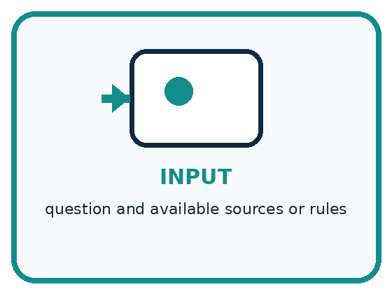
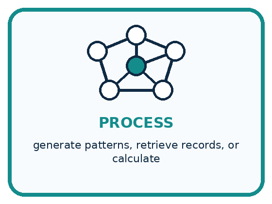
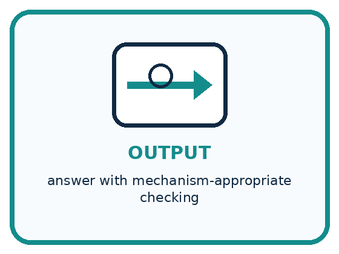
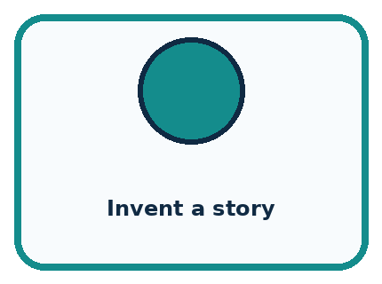
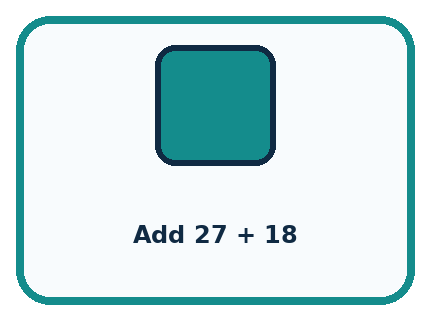
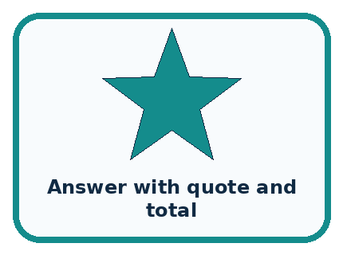
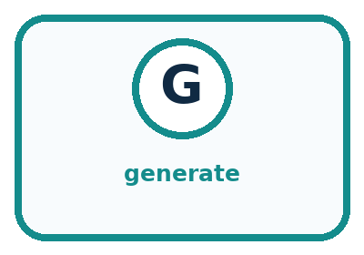
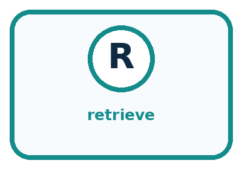
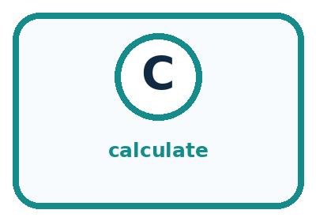
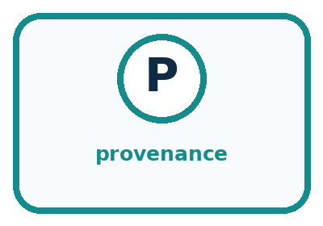

AI Academy · Level 1 · Grade 6 · Week 25 · Student lesson
Generate, Retrieve, or Calculate?
Learn to understand, design, build, test and explain AI systems responsibly.
Project: Helpful Classroom Sorter
Before you start
Week 2: specify what output the task actually requires.
Plan time to read, investigate and explain. Keep predictions separate from observations.
Student lesson · 1 of 14
Your mission
Your learning target
I can distinguish retrieving a record, calculating from inputs and generating wording.
I can trace a task that combines these operations and check each step.
I can identify unsupported details and explain why output appearance does not reveal its method.
Remember before reading
Close your notes first. A rough first answer helps us choose the right starting point; it is not a score for your ability.
Without opening the old lesson, explain one key idea from Privacy by Choosing Less. Give an example and a mistake that the idea helps you avoid.
Without opening the old lesson, explain one key idea from Missing and Unbalanced Examples. Give an example and a mistake that the idea helps you avoid.
Without opening the old lesson, explain one key idea from Similarity. Give an example and a mistake that the idea helps you avoid.
After trying, check the relevant lesson or ask your teacher. Change the part of your explanation that the evidence shows was wrong.
Different systems create, look up, or compute answers in different ways.
Learner name:
Readiness for the connected explanation
You need a chart of three fictional topic totals. Why should a named pupil spreadsheet not be the default input?
This week’s end goal
By the end, I can separate retrieval, calculation and generated wording.
Student lesson · 2 of 14
Notice the evidence
PICTURE STORY
Look Closely Before You Explain
Pictures give clues; evidence tells us what the clues mean.

What do you notice?
Name three visible details without explaining them yet.
Circle the detail most connected to the system's decision.
Name one detail that may be decoration or distraction.
Make a first prediction and state the clue that supports it.
My observations, prediction, and evidence:
A closer explanation
Three tasks can produce similar-looking text while doing different work. Retrieval finds existing information. Calculation applies mathematical operations to input values. Generation produces content using a model and the context it receives. A single application can combine all three, so the label AI does not tell you which step happened.
Our fictional makers club has a current notice N2: Wednesday, Room 4, six tables with four places at each table, and three places reserved for helpers. An older notice N1 says Room 2. N2 explicitly replaces N1 for this event. These records are invented for this lesson; no search, account or real booking is needed.
To answer “Which room does the current notice list?”, find N2 and return Room 4 with the record identifier. That is retrieval. To answer “How many places remain after the helper reservation?”, use 6 × 4 − 3 = 21. That is calculation. To suggest a friendly invitation, generate wording and check that its factual details agree with N2.
Student lesson · 3 of 14
See how it works
VISUAL MECHANISM
Input → Process → Output
Follow the information instead of imagining magic inside the machine.



INPUT question and available sources or rules
PROCESS generate patterns, retrieve records, or calculate
OUTPUT answer with mechanism-appropriate checking
Draw a fresh example with all three stages:
A closer explanation
One club task with three kinds of work
Retrieving N1 accurately would still give an outdated room for this task. Successful retrieval means finding a record, not proving that every record is correct or current. Check the event, source and version. Here the explicit replacement statement tells us which notice governs the classroom example.
A calculator given 6 × 4 correctly returns 24, but 24 is the total capacity, not the number remaining after three reserved places. Correct arithmetic on an incomplete expression answers the wrong question. Explain the input values, units and operations before accepting a number.
Connect the picture and the explanation
Point to the input, the deciding step and the result in this week’s visual. Explain the same step in ordinary words. A picture helps when you can say what each part represents.
Student lesson · 4 of 14
Compare the cases
PICTURE GALLERY
Four Cases, Four Clues
Use the visual cue, then read the evidence carefully.



CASE 1 — Invent a story Clue: new wording from patterns. Meaning: generate.
CASE 2 — Find a book title Clue: return catalog record. Meaning: retrieve.
CASE 3 — Add 27 + 18 Clue: apply arithmetic. Meaning: calculate.
CASE 4 — Answer with quote and total Clue: multiple components. Meaning: mixed system.
Which two pictures are easiest to confuse? What evidence separates them?
Change one thing in the pictured case
Change: Reserve four places instead of two, keeping the room and day unchanged.
Prediction: Eight learner places remain.
Reason: 3×4−4=8; this changes capacity for learners, not the retrieved date or location.
Student lesson · 5 of 14
Words that unlock the idea
VOCABULARY
Words You Can See and Use
The badge is a memory cue; the definition does the real thinking work.




| Word | Meaning | My example |
|---|---|---|
| generate | create a new output from learned patterns | |
| retrieve | find and return stored information | |
| calculate | apply defined operations to values | |
| provenance | where an output or claim came from |
Misconception detective
CLAIM TO REPAIR Any answer on a screen came from a database.
Use one vocabulary word and one piece of evidence to repair it:
Words used in the closer explanation
| Word | Meaning |
|---|---|
| Retrieval | Finding and returning existing information from a collection |
| Calculation | Applying specified mathematical operations to input values |
| Generation | Producing content using a model and its input context |
| Source record | An existing item whose content and origin can be inspected |
| Trace | A record of the inputs, operations and outputs used in a task |
Student lesson · 6 of 14
Follow a worked example
WORKED EXAMPLE
Watch the Reasoning, Not Just the Answer
Every step connects a claim to observable evidence.

STEP 1 — OBSERVE question and available sources or rules
STEP 2 — TRACE generate patterns, retrieve records, or calculate
STEP 3 — CONCLUDE answer with mechanism-appropriate checking
What new evidence could change this answer?
A closer explanation
| Draft statement | Evidence in this example | Decision |
|---|---|---|
| Meet Wednesday in Room 4 | Current notice N2 | Supported by the record |
| There are 21 non-helper places | 6 × 4 − 3 from N2 | Supported by calculation |
| Free snacks will be provided | Not stated in N2 | Remove or verify separately |
A generated invitation might add free snacks because that detail fits a familiar invitation pattern. Plausible wording is not evidence that snacks are provided. Remove that claim or obtain an appropriate confirming source before including it. Generated content can be useful and can contain correct facts; its fluent style alone does not verify those facts.
Generation also does not guarantee originality. A response may repeat wording already present in its context or elsewhere. Retrieval and calculation can feed a generator, and a generator can propose a calculation for another tool. Keep the evidence path visible instead of assuming that every sentence came from the same operation.
Learn from the worked case
Cover the result before checking it. Say what is given, choose the procedure, and follow one step at a time. Then uncover the result and explain your first mismatch. Ask why a step is allowed, not only what number it produces.
A pictorial worked case: Generate, Retrieve, or Calculate?
A fictional craft invitation combines three different operations.
The facts we will use
Approved record C: Tuesday, Hall 4, three tables with four learner places each.
Two places are reserved for helpers; no snack information is supplied.

Read the picture one step at a time
Why this result follows
Retrieval copies relevant source information; calculation follows arithmetic; generation proposes wording. These jobs can cooperate, but one does not validate the others. A friendly generated sentence can still contain an invented detail. Keep the approved source beside the draft and check each factual claim separately.
What this example does not establish
The fictional source must itself be current and authoritative; retrieval alone does not ensure a record is correct.
Student lesson · 7 of 14
Find and repair a mistake
COMPARE
Same Result, Different Reason
A comparison helps reveal the true concept boundary.
| Case | Evidence | What it shows |
|---|---|---|
| Invent a story | new wording from patterns | generate |
| Find a book title | return catalog record | retrieve |
| Add 27 + 18 | apply arithmetic | calculate |
| Answer with quote and total | multiple components | mixed system |
Repair two tempting claims
CLAIM A Any answer on a screen came from a database.
Repair:
CLAIM B Calculated outputs never need checking.
Repair:
A closer explanation
For an existing meeting time, retrieve the relevant notice. For a total, calculate using the right inputs and units. For a draft title or invitation, generation can offer wording, followed by review. You can also do these classroom tasks on paper. Choose the operation because it fits the question, not because a tool is described as intelligent.
A complete answer keeps source facts, derived results and suggested wording distinguishable. It marks missing facts instead of inventing them, preserves the source identifier and explains the arithmetic. This makes a later change easier to handle: if the number of reserved places changes, recompute the result and update the sentence.
Student lesson · 8 of 14
Practise together
GUIDED PRACTICE
Try It, Check It, Explain It
Use support now so you can succeed independently later.

Explain how the picture story demonstrates this idea: Different systems create, look up, or compute answers in different ways.
Use a fresh example to explain generate.
Trace a new input → process → output example.
Find and repair the error in: Calculated outputs never need checking.
Invent one edge case and name the safe response.
A closer explanation
Two applications display “21 places remain.” One trace shows retrieval of N2 followed by a calculator call for 6 × 4 − 3 and a sentence built from the result. The other gives no record or tool trace. Their identical visible answers do not establish identical methods. The second answer may be right, but its appearance does not prove retrieval or calculation took place.
Check the record yourself and independently recompute 6 × 4 − 3. A displayed trace is useful evidence, but it should refer to an inspectable record and the actual tool result. A sentence saying “I checked” is not the same as a check you can inspect. If evidence is unavailable, say what remains unverified.
Practise with less help: Separate a correct sum from a correct answer
Use workbook W2 for the connected example “Generation retrieval and calculation”. First fill the input and rule boxes. Try the middle steps before asking for a hint. After a hint, try the next step yourself.
| Plan | Do | Check |
|---|---|---|
| What is given? Which rule or procedure applies? | Record each intermediate step. | Does the result follow? What remains unknown? |
Explain your trace to a partner. Your partner points to one step to check. Swap roles on the next case. Each person writes their own explanation.
Check your reasoning
Use the worked case for Generation retrieval and calculation. Proposed explanation: “Retrieving a record proves it is current”. Decide whether this explanation is supported. Point to the step or supplied fact that decides; explain your repair if needed.
Answer on your own before discussion. If you are unsure, say which step you need help with.
Explain the picture
Label each arrow with its operation. Can the system add snacks because invitations often mention them?
This is supported practice. Keep the separately named independent case for an attempt before feedback.
Student lesson · 9 of 14
Run the investigation
EXPLORER LAB
Mechanism Sorting Station
Predict first, test honestly, and explain what the evidence means.

State your prediction before the result is known.
Complete the task: Classify nine outputs by mechanism and verification need.
Keep a normal case and an edge case clearly separated.
Record what happened—even when it does not match your prediction.
Explain the result, one limitation, and the next useful test.
| Case | Prediction | Observed result | What it means |
|---|---|---|---|
| Normal | |||
| Edge |
Plan → try → check
Before trying: what do I expect, and why? While trying: which step could first go wrong? Afterwards: what did I actually observe, and what should change? Keep “not run” if you only traced the procedure.
Student lesson · 10 of 14
Build your understanding
PRACTICE LADDER
Climb from Recall to Defense
Each step asks for a stronger kind of understanding.

RECALL Define generate.
EXPLAIN Different systems create, look up, or compute answers in different ways.
TRACE Show the input, process, and output.
DIAGNOSE Repair: Any answer on a screen came from a database.
TRANSFER Apply the idea to a new home or classroom case.
CREATE Design one revealing test.
DEFEND Give a claim, evidence, mechanism, limit, and safe action.
Student lesson · 11 of 14
Connect your project
PROJECT
Helpful Classroom Sorter
Build one coherent system across the year, one evidence-based decision at a time.

What real classroom need does this serve?
What information is necessary—and what should stay private?
What happens inside the process?
What normal and edge cases will you test?
When should it say not sure or ask a person?

My project decision:
Evidence for your project
Use the sorter’s approved catalogue for facts, explicit calculations for scores and checked prose for explanations.
Student lesson · 12 of 14
Show what you know
MASTERY
Fresh-Case Independent Proof
Complete this after teaching and guided practice have ended.

□ Name or draw the fresh case.
□ Trace input, process, and output.
□ State the conclusion and strongest evidence.
□ Name one limit, failure, missing clue, or fairness/privacy concern.
□ Explain one safe next action or improvement.
Independent evidence:
My level: □ Not yet □ With one hint □ Independently □ I can teach it
Student lesson · 13 of 14
Study a complete case
Week 25 Worked case
Use the supplied details to practise the weekly concept before attempting the independent question. This case extends the illustrated lesson.
The situation
A learner needs a new poem, 18+7, and a passage from the class handbook.
The question
Choose the operation for each.
Worked explanation
Generate the poem, calculate 25, retrieve the actual passage. Inventing a fluent passage is not retrieval.
Explain it in your own words
Which detail supports the answer, and why does it matter?
Trace the supplied case visually
Choose the operation that fits
| Evidence or stage | Value or result |
|---|---|
| New rain poem | Generate |
| 18 + 7 | Calculate → 25 |
| Handbook passage | Retrieve the actual text |
A learner needs a new poem, 18+7, and a passage from the class handbook.
Choose the operation for each.
Generate the poem, calculate 25, retrieve the actual passage. Inventing a fluent passage is not retrieval.
Student lesson · 14 of 14
Try a new case independently
Independent case: Trace a new library workshop
Current fictional record B lists a library workshop on Friday in Room 5: five tables with six places each, with four places reserved for helpers. B replaces old record A, which lists Room 3. A draft says “Thursday in Room 3, with 30 places remaining and a free bus home.” Retrieve the current day and room, calculate the non-helper places, write a corrected factual sentence and identify the detail that cannot be supported by B.
Attempt this case before feedback. Record any help. Earlier examples below are further practice; a case already practised with feedback cannot establish fresh transfer.
Week 25 Independent application
Close the worked explanation. Apply the idea to this different question without copying.
Choose a method for each task: invent a dragon story; find the library's posted hours; compute 7 plus 5. Explain why the methods differ.
My answer, with a trace, calculation or supporting evidence
Create and test
Change one relevant detail. Predict the result before testing. Include a boundary or missing-information case when it helps reveal a limit.
My changed input and expected result
Connect to your project
Label every sorter component as generate, retrieve, calculate, fixed rule, learned prediction, or human decision.
The evidence I will keep
Your teacher has the independent answer and scoring criteria. Complete the matching workbook week to keep your practice evidence together.
Transfer practice from the original programme
Three tasks are: invent a school motto, find the exact fire-drill meeting point in a supplied handbook, and divide 84 stickers among 7 teams. Choose generation, retrieval or calculation for each. Which outputs need checking?
Use feedback to improve
Attempt the independent case before hints. Record whether you worked alone, used a hint or followed a model. After feedback, fix the first unsupported step and explain why it changed. A later check uses a changed case, not a copied answer.